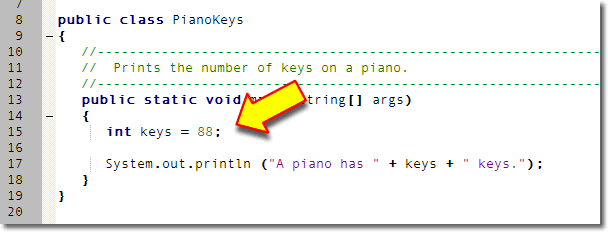
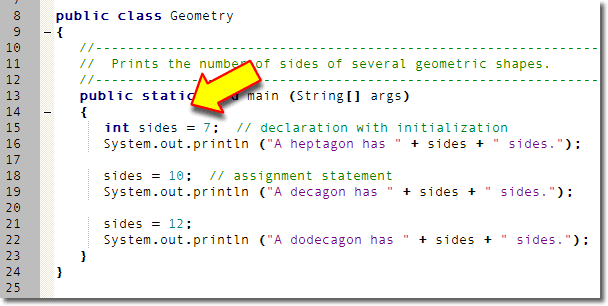
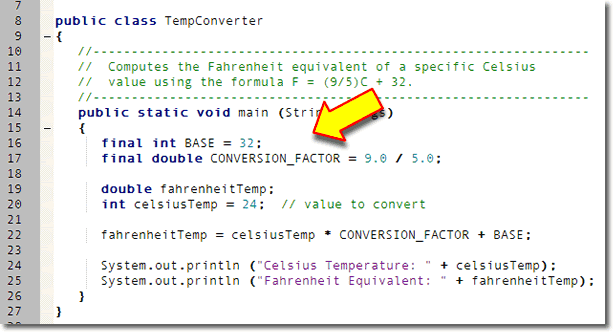

When you pass arguments (or parameters) to a method, you supply information that the method uses to carry out its, actions. Here are some method calls used to draw and fill rectangles in a graphical applet. (You'll learn how to do this next week). When you write:
pen.drawRect( 0, 0, 100, 100);
pen.fillRect( 102, 0, 100, 100);
pen.fillRect( 0, 102, 100, 100);
pen.clearRect(102, 102, 100, 100);
the drawRect(), fillRect(), and
clearRect() methods use the values you
supply—0, 100, and 102—to
carry out the action of displaying your rectangles on the screen,
just like the println() method uses the values you
supply to print a message on the console.
The values passed in this example are called literals,
because the values you use
appear literally in your source code.
Unfortunately, using literal values like this is less than ideal, for several reasons:
- No meaning is associated with each number. A reader
unfamiliar with the
drawRect()method, can't easily tell the difference between the two uses of the literal100in the first line of code. For this reason, such literals are called magic numbers. - If you want to make changes to a section of code, such as changing the width of each of the rectangles shown above to 95 pixels (from 100), using literals makes your work much more difficult and error-prone. You can't just change every 100 to 95, because other values (like 102 in the example), depend on the original 100.
- Literals only work for simple primitive types, like numbers
characters and text. If you want to use object types, like
ColorandFont, you have to use variables, rather than literals.
In this lesson you'll learn:
- how to create variables for simple (primitive) types
- how to assign a value to a variable
- how to create named constants you can use instead of literals
- how to create object variables and initialize them using a constructor.
We'll start by looking at the code you need to create variables.
Creating Variables
The formal definition of a variables is:
A named storage area that holds a value
To create a variable, you define it by using a special kind of Java statement called a declaration or definition statement. In Java, all variables must be defined before you can use them. (This is different than some other languages, such as Visual Basic, which permit implicit variable definition.)
The syntax (or rule) for defining variables looks like this:
[modifiers] type name[ = initializer];
The syntax elements appearing in brackets [] are optional. The brackets are not part of the syntax. We'll cover the first optional element, modifiers, a little later.
Here are some example defintions:
int width; // no modifiers or initializer
int height = 95; // uses initializer
private Color background; // private modifier
public static final int SIZE = 35; // all modifiers
Definition tells the compiler what kind
of value the storage location will contain (int,
Color), the name of the storage
location, (width, height,
background, and SIZE), and,
optionally, an initial value to store in the location.
Variable Scope
You can define variables in two places: inside a method, or inside the class, but outside of any method. Variable that are defined inside a method are called local variables, and variables defined outside of a method, but inside the class, are called instance variables.
We'll use local variables for most of the first half of the class, and learn how to create and use instance variables after the midterm. For right now, though, let's quickly examine some of the differences.
Local Variables
Local variables, (those defined inside of a method),
can only be used
inside the method where they were created. The variable
keys defined inside the
PianoKeys program:

and the variable
sides defined inside the Geometry
program, are examples
of local variables.
Local variables are not given an initial value when they are created; you must provide an initial value explictly, or assign a value before you use the variable. If you attempt to use an uninitialized local variable, the compiler will refuse to compile your code.
Local variables also don't use modifiers like static,
public, or private. You can, though,
use the modifier final to make a local variable
constant. We'll discuss doing that shortly.
Instance Variables
Your textbook doesn't talk about instance variables until Chapter 7, and we won't cover that until after the Midterm Exam, but I want you to have a little preview of what's coming up. In Java, variables created outside of a method are officially called fields. However, in the real world, you'll more often see them called instance variables, which is a more general object-oriented term.
Instance variables can be used inside any method in the class.
Normally, instance variables are created using the access
modifier private, so that the variable cannot
be used outside of the class. Occassionally, fields will
use the modifier protected, so that subclasses
created from the class may directly access the fields.
In very rare instances, programmers will use the
public modifier to allow unrestricted access
to an object's instance variables. This is almost always a
poor idea, as the designers of Java's Point,
Dimension, and Rectangle classes
discovered after-the-fact.
Unlike local variables, instance variables are automatically
given a value (initialized), even when you don't provide an
initial value. Numeric variables (like int) are
initialized to the value 0, while object variables are given
the special value null.
Constants
Which of these two lines of code for calculating the total price of a purchase are easier to understand?
totalPrice = price + price * SALES_TAX_RATE; totalPrice = price + price * .875;
Obviously, in the second instance, you have no hint as to what the number .875 actually means; it might be a tax, a markup, a surcharge, or something else. You might use a comment to let readers know that you're adding the sales tax, and that would certainly help.
A comment won't help you, though, when the tax rate changes from 8¾% to 7¼% (we can always hope, huh?) and you have to change all of your programs. When that happens, you'll find yourself searching through your source code looking for the number .875 and asking yourself, "Is this the sales-tax-rate, or something else?". You're also likely to change some, and miss a few others.
Rather than using magic numbers, you should always use constants. A constant is just like a variable, (that is, it is a named storage area that holds a value), but Java prevents you from accidentally changing it by assigning it a different value.
Defining Constants
To define a constant, you use the keyword final
as a modifier before the type name, and provide a value
using the initializing assignment operator. (Since
constants can't be changed, you can't give it a
value later using the regular assignment operator.)
The program TempConverter.java
defines two constants, BASE and
CONVERSION_FACTOR:

To make it clear which names represent variables, (and thus can be changed), and which represent constants, the TempConverter program CAPITALIZES the names of the two constants. This is a convention that almost all Java programs follow, (and certainly one that we'll follow in this class.)
Initializing Variables
A variable is a named "chunk" of memory, but most of the time, we don't care about the chunk of memory at all—what we care about is what's inside the memory. The number stored inside a variable is called the variable's value. As your program runs, you can store different numbers inside the same piece of memory. (That's why we call it a variable, since its value can vary as the program runs.)
To put a new value in a variable, you use the assignment statement like this:
int sides = 7; // declaration with initialization sides = 10; // assignment statementThe assignment statement kind of looks like an equation in algebra, but it works a bit differently. The assignment statement copies the value on its right, and stores the copy in the named memory location (the variable) on its left.
Technical Note : There are two different uses of the assignment operator. In the first line shown here, the assignment operator should really be called the initalization operator, because you are writing a definition or declaration statement, not an executable assignment statement. Executable assignment means giving a value to a variable that already exists, not to provide an initial value to a newly created variable. Executable assignment statements must appear inside a method, while initialization statements can occur outside a method when an instance variable is defined.
How Assignment Works
 If you think of a variable as a mailbox, then
assignment is something like putting a letter inside
the mailbox. With memory, though, each "mailbox: is
just big enough to hold exactly one value. When you
put a second value into a variable, the one that's
there is replaced. (The computer science term for this
is a destructive copy.)
If you think of a variable as a mailbox, then
assignment is something like putting a letter inside
the mailbox. With memory, though, each "mailbox: is
just big enough to hold exactly one value. When you
put a second value into a variable, the one that's
there is replaced. (The computer science term for this
is a destructive copy.)
Here are some examples using two variables,
myAge and kathysAge.
(Kathy is my wife, so you'll understand that she isn't
too happy when I add a few years to her age.)
- The statement
myAge = 59;puts a copy of the value 59 into the variable namedmyAge. - The statement
kathysAge = myAgemakes a copy of the value 59 that is currently stored in the variablemyAge, and then stores that copy in the variablekathysAge. There is no transfer of the value stored inmyAge; the variablemyAgestill has its own copy of the number 59. - The statement
kathysAge = 57, replaces the value 59 that the variable previously held with the new value 57. The old value 59 is overwritten or replaced, not saved.
Notice that the variable kathysAge
varies as the program runs. At one point it
contains the number 59, and, later in the program's
execution, it contains the value 57. This similar to
the Geometry program that appears earlier in
this lesson, where the variable sides changes
value from 7 to 10 to 12.
Notice also that the variable myAge
contains the value 59 for the entire length of the
program. Assigning myAge to
kathysAge in line 2 doesn't change
myAge at all.
Types of Values
When we store values in a variable, we can classify each value by the kind of thing that it is, just like you can classify the beverages you can purchase at 7-11. There, for instance, you can get hot drinks, like coffee or hot chocolate, and cold drinks, like soda and Slurpies.
The computer world works in a similar fashion. Instead of hot and cold, we can store text or numbers in a variable. We call the kind of value the value's type.
Here are some examples:
PI = 3.14159; myAge = 59; myStreetNumber = "575";The values stored in
PI and myAge
are both numbers, but they are
different kinds of numbers, just like coffee
and hot-chocolate are both hot drinks, but different
kinds of hot drinks. PI contains a
real number, with a fractional part, while
myAge holds a whole number with
no fractional part.
In contrast, the variable named myStreetNumber
does not contain a number. Instead, it contains
a sequence of three characters: the character "5"
followed by the character "7" followed again by the
character "5". In programming, we call such a sequence of
text characters, enclosed in double quotes, a
string literal.
The major difference between the numeric types
stored in the variables PI and
myAge, and the string types stored in the
variable myStreetNumber, is that you
can't use myStreetNumber as part of an
arithmetic formula or expression.
We'll look at Java's integer (whole number) types and Java's real (floating-point) numbers in upcoming lessons. There, you'll learn a little more about how to create varibles of the specific types available in Java.
Object Variables
Java really has two major ways of representing data: primitive types like numbers and characters, and object types like fonts and buttons strings. You can read a little more about this in Chapter 2 of your textbook, but we won't be really focusing on objects until the second half of the course. For right now, though, I want to introduce you to the process of creating object variables, since you'll need to do that this week.
You create an object variable, just like a primitive variable, by explicitly describing three things:
- What kind (type) of thing will be stored in the variable
- What name you want to use for the variable
- What initial value the variable should have
To store a value in your variable you use the assignment operator, as you've seen. The assignment operator copies the value on its right, and stores it in the object on its left. To create a local variable of type Fraction (a class that I've defined), you would write something like this:
Fraction oneHalf = ?????;
As you can see, the type is Fraction, the name is
Fraction, but how do we provide a value?
Constructing Objects
At this point, we're kind of in a quandry. How do we create an object? What do we put on the right-hand-side of the assignment operator? If our variable was one of Java's primitive numeric types we could use a literal value to do something like this:
int someNumber = 27;
Since oneHalf is an object or reference
type, however, we need to learn how to construct an
object; we can't just use a literal value like 27. Fortunately,
constructing an object is easy. To construct an
object—any object—you just use a constructor
method, along with the keyword new.
A constructor is simply a method that initializes objects.
A class represents a blueprint that describes the attributes and methods of an object and the constructor is the factory that creates the goods.
To make things even easier, constructors always have the same
name as the thing you're trying to create. Since we're trying
to create a Fraction object, we know that the
constructor is a method named Fraction(). Now we can
finish what we started:
Fraction oneHalf = new Fraction( . . . );
Constructor Parameters
Well, more or less finished. Notice that constructor parameter list is empty—there's nothing inside the parentheses. Most objects have several constructors, each one taking a different number or type of arguments. Parameters (or arguments) allow a constructor—or any other method—to customize its operation.
One version of the Fraction class takes two int
parameters, representing the numerator and denominator. Here
is code to create
three Fraction variables:
Fraction a = new Fraction(1, 2);
Fraction b = new Fraction(1, 2);
Fraction c = b;
 and here's what those three variables, along with
the objects created by the constructors, look like
in memory.
and here's what those three variables, along with
the objects created by the constructors, look like
in memory.
The biggest difference between object and primitive
variables is that with primitives, the variable you create
contains a value. With objects, the variable
that you create only refers to the object. That's why
in my example here, the two variables b and
c both refer to (or share) the same
Fraction object.
Again, we'll cover this in greater depth later in the semester. For the first half of the course, we'll concentrate on programming fundamentals, using mostly the primitive numeric types. The reason you need to learn how to construct an object at this point is because you'll need it for reading console input.
Coming Up ...
In this lesson you learned to declare variables, and how to initialize those variables using literals. You also learned how to create constants that you can use to replace literal values in your code. Finally, you learned how to create object variables, and to initialize those variables using a constructor.
In the next lesson you'll learn about Java's two numeric primitive types: integers and floating-point numbers.